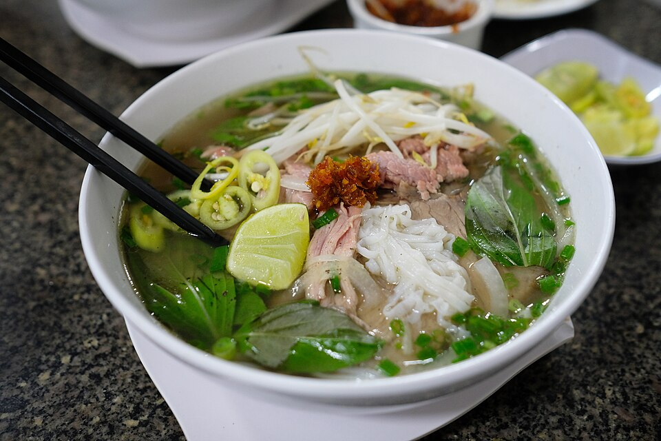

Pho
Home

By Vinnie Cartabiano -
Flickr,
CC BY 2.0,
Link
Description
Vietnamese noodle dish in a light meat broth, often paired with various cuts of beef, chicken, etc.
The noodles are rice noodles and the beef commonly served thinly sliced, cooking in the broth when
it is poured. This recipe uses the traditional method and ingredients, slightly modernised
for convenience.
Ingredients
- 4 pounds beef soup bones (shank and knee)
- 1 medium onion, unpeeled and cut in half
- 5 slices fresh ginger
- 1 tablespoon salt
- 2 pods star anise
- 2 ½ tablespoons fish sauce
- 4 quarts water
- 1 (8 ounce) package dried rice noodles
- 1 ½ pounds beef top sirloin, thinly sliced
- ½ cup chopped cilantro
- 1 tablespoon chopped green onion
- 1 ½ cups bean sprouts
- 1 bunch Thai basil
- 1 medium lime, cut into 4 wedges
Steps
- Gather all ingredients.
- Preheat the oven to 425 degrees F (220 degrees C).
- Place beef bones on a baking sheet and roast in the preheated oven until browned, about 1 hour.
- Place onion halves on a second baking sheet and roast on another rack until blackened and soft, about 45 minutes.
- Transfer beef bones and onion halves to a large stockpot. Add ginger, salt, star anise, fish sauce, and 4 quarts water;
bring to a boil. Reduce heat to low and simmer for 6 to 10 hours. Strain the broth into a saucepan and set aside.
- Place rice noodles in a large bowl filled with room temperature water. Let soak for 1 hour. Drain.
- When noodles have soaked for 1 hour, heat up the reserved broth by bringing it to a simmer.
- Bring a large pot of water to a boil. Cook the noodles in the boiling water for 1 minute. Drain.
- Divide noodles among 4 serving bowls; top with sirloin, cilantro, and green onion. Ladle hot broth over the top.
Stir and let sit until beef is partially cooked and no longer pink, 1 to 2 minutes.
- Serve with bean sprouts, Thai basil, lime wedges, hoisin sauce, and chile-garlic sauce on the side.